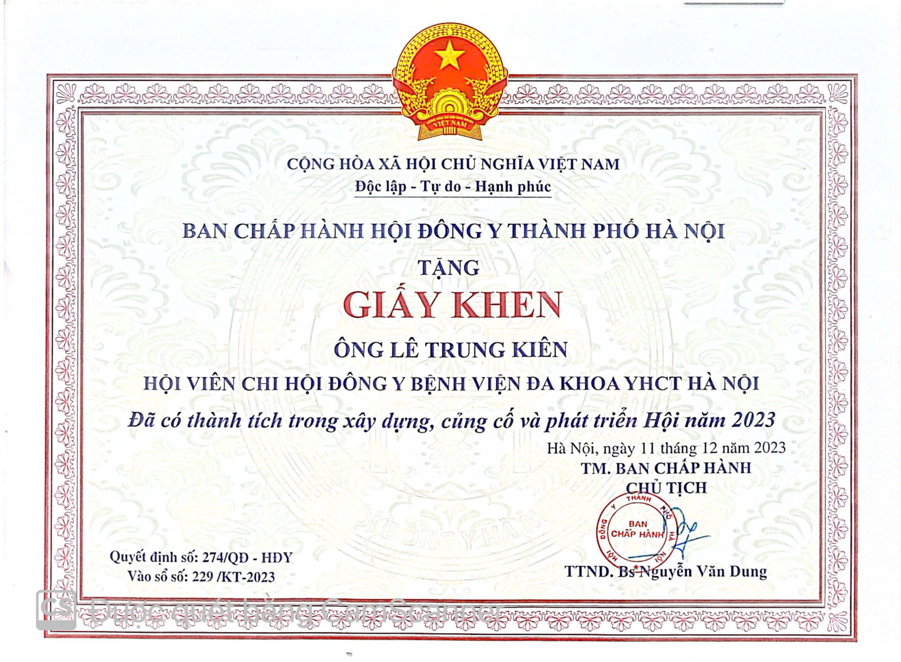
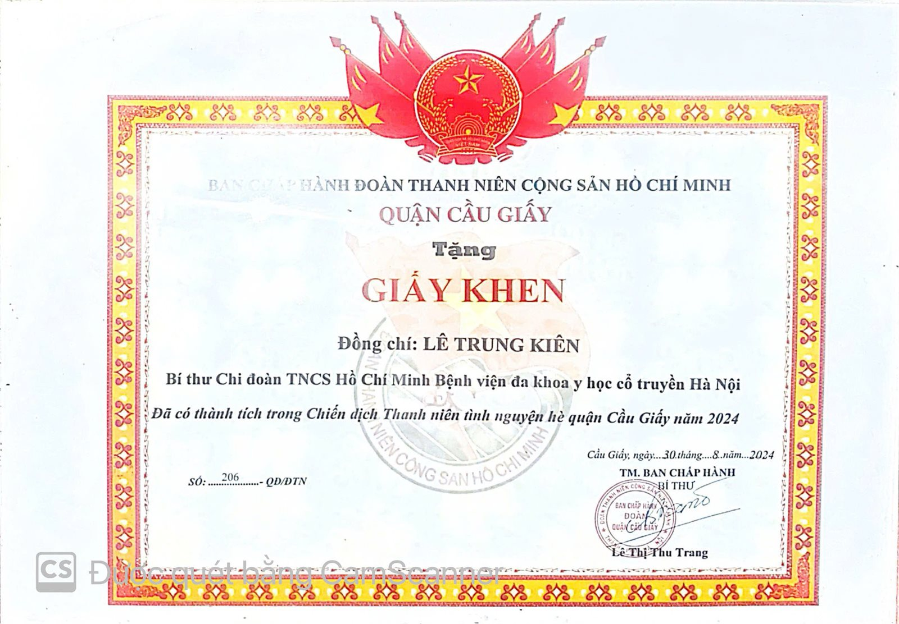
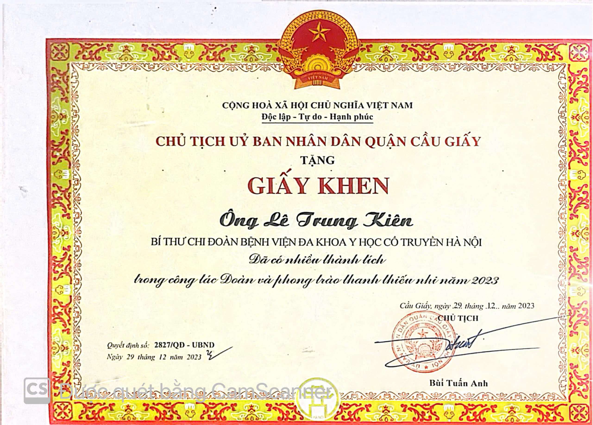
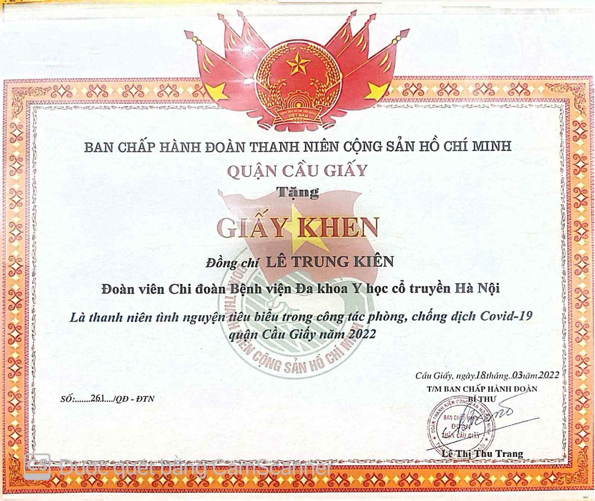

Hồ sơ đầy đủ
Quá trình công tác & học vấn
Quá trình công tác
- Bác sĩ, Bệnh viện Đa khoa Y học cổ truyền Hà Nội (2020 – nay)
- Thư ký Ban chủ nhiệm Chuyên khoa đầu ngành Y học cổ truyền — Sở Y tế Hà Nội (từ 6/2026)
- Thành viên Hội Đông y Hà Nội
- Thành viên Hội Châm cứu Hà Nội
- Thành viên Hội Châm cứu Việt Nam
- Thành viên Hội Vật lý trị liệu Việt Nam
Học tập & nghiên cứu
- Thạc sĩ Y học cổ truyền — Đại học Y Hà Nội (2025)
- Bác sĩ Y học cổ truyền — Học viện Y Dược học cổ truyền Việt Nam (2018)
- Chứng chỉ hành nghề khám chữa bệnh — Sở Y tế Hà Nội (2022)
- Chứng chỉ Định hướng chuyên khoa Nội — Đại học Y Hà Nội (2019)
- Chứng chỉ Sư phạm Y học — Đại học Y Hà Nội (2025)
- Chứng chỉ Nghiệp vụ sư phạm Đại học, Cao đẳng — Đại học Sư phạm Hà Nội 2 (2025)
- Chứng chỉ Siêu âm cơ xương khớp & Siêu âm tổng quát — Đại học Y Hải Phòng (2025)
Giải thưởng & chứng nhận
Toàn bộ giải thưởng





